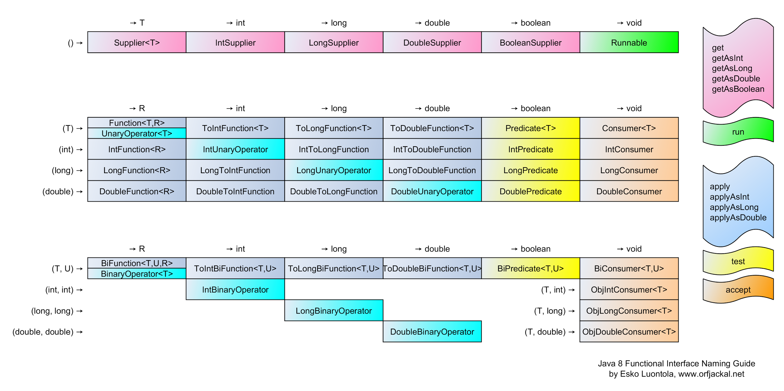

Java
Table of Contents
1 Type
1.1 Numeric
1.1.1 Integer
| Type | Byte | Min | Max | Default Value |
|---|---|---|---|---|
byte |
1 | -128 | 127 | 0 |
short |
2 | -32,768 | 32,767 | 0 |
int |
4 | -2,147,483,648 | 2,147,483,647 | 0 |
long |
8 | -9,223,372,036,854,775,808 | 9,223,372,036,854,775,807 | 0L |
1.1.2 Float
| Type | Byte | Min | Max | Default Value |
|---|---|---|---|---|
float |
4 | \(2^{-149}\) | \((2-2^{-23}) \times 2^{127}\) | 0.0f |
0x0.000002P-126f |
0x1.fffffeP+127f |
|||
double |
8 | \(2^{-1074}\) | \((2-2^{-52}) \times 2^{1023}\) | 0.0d |
0x0.0000000000001P-1022 |
0x1.fffffffffffffP+1023 |
1.1.3 Suffix
Integer values are treated as int by default, unless suffixed by L for long:
long foo = 100000L;
Floating point values are treated as double by default, unless suffixed by F or f for float:
float foo = 234.5F;
1.1.4 Underscore
Java Documentation | Underscores in Numeric Literals
Integer foo = 1000000; Integer bar = 1_000_000;
1.2 Character
16-bit unsigned integer value used to store Unicode character.
char foo = 'A'; char bar; // Empty value is \u0000
1.3 String
String foo = "bar"; String foo = "bar" + " " + "bar";
1.4 Array
int[] foo = new int[10]; // Size must be decided String bar[] = new String[5]; // [] can be after type or var name int[] foo = new int[]{1, 2, 3}; String[] bar = new String[]{"a", "b", "c"}; int[] foo = {1, 2, 3}; String bar[] = {"a", "b", "c"}; for (int i = 0; i < foo.length; i++) {} for (String i : bar) {} int[] foo() { return new int[]{1, 2, 3}; }
1.5 Enum
2 Type Usage
2.1 Casting
int foo = (int) bar;
2.2 Conversion
Conversion methods exist for different types, e.g.:
int foo = Integer.parseInt("123"); String bar = Integer.toString(123);
3 Variable
3.1 Syntax
int foo; int foo, bar; int foo = 1; int foo = 1, bar = 2;
3.2 final
Final variables can't be reassigned.
final int foo; final int bar; bar = 1; // Can be intialized after definition String s; final int l = s.length(); // Use "final" to indicate the value is immutable
4 Statement
4.1 for
for (int i = 0; i < 10; i++) {} int[] nums = {1, 2, 3}; for (int n : nums) {}
4.2 break
Break multiple loops:
outer: for (int i = 0; i < 10; i++) { for (int j = 0; j < 10; j++) { if (i == 5 && j == 5) { break outer; } } }
4.3 try
4.3.1 try with Resource
If a resource type implements AutoClosable interface, it can be initialized within the try statement. The resource is guaranteed to be closed if any exception is thrown from the try block. If multiple resources are initialized, the first initialized resource will be closed lastly.
- Example
Define 2 resource types:
public abstract class Resource implements AutoCloseable { protected abstract String getName(); public Resource() { System.out.println("Creating " + getName()); } public void use() throws Exception { System.out.println("Using " + getName()); throw new Exception("Throwing exception on " + getName()); } @Override public void close() { System.out.println("Closing " + getName()); } } public class FooResource extends Resource { @Override protected String getName() { return "foo"; } } public class BarResource extends Resource { @Override protected String getName() { return "bar"; } }
Init the resource object in
trystatement:try ( FooResource foo = new FooResource(); BarResource bar = new BarResource() ) { foo.use(); bar.use(); } catch (Exception e) { System.out.println(e.getMessage()); }
Output:
Creating foo Creating bar Using foo # Throws exception on foo, bar is never used Closing bar # Last initialized resource is closed first Closing foo Throwing exception on foo
5 Method
5.1 main()
public static void main(String[] args) {}
6 OOP
6.1 Property
The Java Tutorials | Classes and Objects | Declaring Member Variables
<access> [static] <type> <name> [= <value>];
public static int capacity = 10; private boolean isFull;
6.2 Constructor
6.2.1 this()
Explicit constructor invocation: inside one constructor, calling another constructor (of the same class) using this().
public class Rectangle { private int x, y; private int width, height; public Rectangle() { this(0, 0, 1, 1); } public Rectangle(int width, int height) { this(0, 0, width, height); } public Rectangle(int x, int y, int width, int height) { this.x = x; this.y = y; this.width = width; this.height = height; } }
6.2.2 Implicit Constructor
If a class has no constructor, Java compiler will implicit generate a constructor.
6.3 Initialization Block
The Java Tutorials | Classes and Objects | Initializing Fields
{
// Initialization code
}
Content of initilization block is copied into every contructor (and placed before the contructor code) by compiler.
An alternative is to use a private (or protected) final method:
private Type var = initVar(); private final Type initVar() { ... }
6.4 Static Initialization Block
The Java Tutorials | Classes and Objects | Initializing Fields
static { // Initialization code }
An alternative is to use a private static method:
private static Type var = initVar(); private static Type initVar() { ... }
7 Functional Programming
7.1 Functional Interface

// 1. Functional interface public interface Runnable () { void run(); } // 2. Method that expects an object which implements the functional interface, // and invokes its method public void runThis(final Runnable r) { r.run(); } // 3. Pass lambda expression which implements the functional interface runThis(() -> System.out.println("Done")); // void run(): no param, returns void // () -> System.out.println(): no param, returns void
8 Package
8.1 import
import foo.Bar; // Import specific class inside package import foo.*; // Import all classes inside package
9 Module
A module is one or more packages that belong together.
10 Command
10.1 java
java <options> <class> <arg> ...
-version
10.2 javac
javac <options> <class>.java ...
10.3 javadoc
Java Documentation | Tools | javadoc
javadoc <options> <package> ... <src_file> ...
<options>
-sourcepath <path>:... # Location(s) of source files
-classpath <path>:... # Location(s) of user class files
-subpackages <package>:... # Subpackages to load recursively
-public # Only public classes and members
-protected # Protected and public classes and members (default)
-private # All classes and members
-d <path> # Location of output files
-doclet <class> # Generate output via alternate doclet
-docletpath <path> # Location of doclet class files